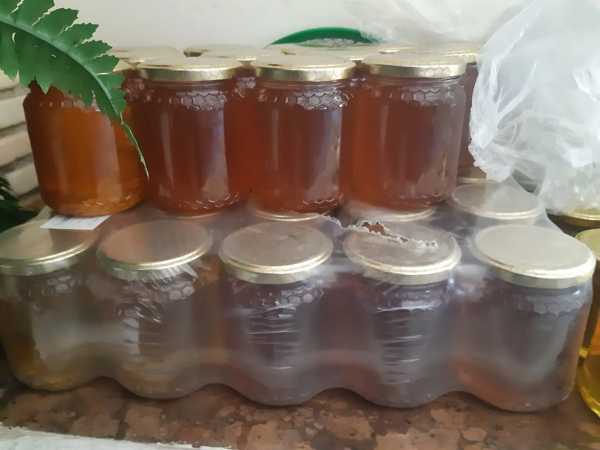

Miele di Acacia
- Fioritura
- maggio
- Colore
- chiarissimo, quasi trasparente
- Gusto
- delicato e dolce
- Stato
- resta liquido a lungo
formati: 250 g · 500 g · 1 kg
Prodotti · pagina 3
Tre mieli, tre fioriture diverse. Ognuno ha il suo colore, il suo profumo e il suo modo di cristallizzare. Li invasettiamo noi, senza aggiunte.
smieliamo solo il miele opercolato, cioè maturo

formati: 250 g · 500 g · 1 kg

formati: 250 g · 500 g · 1 kg

formati: 250 g · 500 g · 1 kg

Vasetti da 40 g, ideali da assaggiare o da regalare.

Raccolto dalle nostre api, in granuli.

Fatti a mano e personalizzati: chiama e personalizza il tuo ricordo più dolce.
Da sempre il miele è una valida alternativa allo zucchero: la sua composizione di glucosio e fruttosio lo rende, dal punto di vista culinario, insostituibile.
Il suo impiego è versatile: inumidisce al meglio dolci e torte, grazie alla presenza elevata di fruttosio, e ne garantisce una più lunga conservazione. Utilizzato a crudo, invece, regala tutto il suo aroma e la sua essenza, soprattutto in abbinamento a determinati alimenti come i formaggi.
ecco alcune ricette da provare...

Una versione light della tradizionale torta di formaggio americana, dove lo yogurt bianco alla greca e il miele sostituiscono panna e zucchero. Da servire da sola, con frutta fresca o con salse alla frutta o al cioccolato.
Dolce onnipresente sulle tavole dei napoletani a Natale ma anche a Carnevale: palline di pasta fritta affogate nel miele e ricoperte di confettini colorati, i diavulilli.
il miele più adatto? il millefioriUna delle ricette più semplici ma anche delle più golose: vi basterà poco per dare vita a una colazione veloce, sfiziosa e originale.
Il binomio perfetto per una colazione nutriente e golosa.
Ravioli fatti in casa farciti con gustoso pecorino sardo, accompagnati da una coppetta di miele dolce.
Se hai una ricetta con il nostro miele, raccontacela: la aggiungiamo al quaderno.
scrivici su WhatsApp